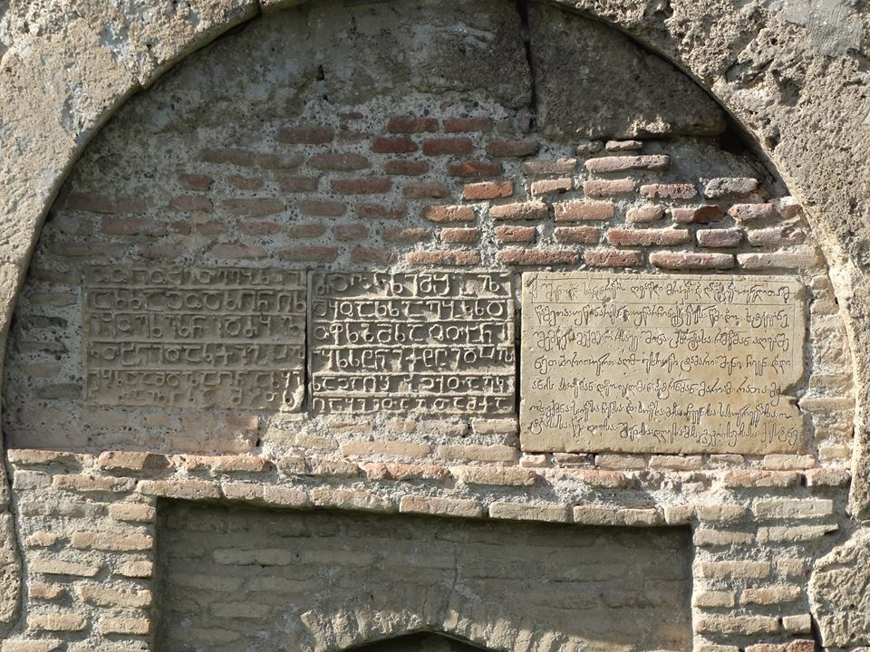

ურბნისის სიონის აღდგენის წარწერა თევდორე ეპისკოპოსისაUrbnisi Sioni church, restoration inscription of Bishop Theodoros
ურბნისის სიონის აღდგენის წარწერა თევდორე ეპისკოპოსისა
Urbnisi Sioni church, restoration inscription of Bishop Theodoros
შინაარსი / Summary
მემორიალური Memorial
კრიტიკული გამოცემა Interpretive Edition
ო(ჳფალო)ო ღ(მერთ)ო შ(ეიწყალ)ე თ(ევდორ)ე ებ(ი)სკ(ოპოს)ი ძ(ე)ჲ ლ(უ)კ(აჲ)სი მ(ა)შ(ჱნე)ბ(ე)ლი
ა(მი)ს ს(იონის)აჲ ოდ(ე)ს ღ(მერთმა)ნ ღ(ირ)სმყო ა(მი)ს ს(იონის)ა ებ(ის)კ(ოპო)ს(ა)დ
იყო ესე ს(იო)ნი დ(ა)ძ(უელე)ბ(უ)ლ ო(ჳ)ფ(როჲ)ს ზ(ო)მ(ა)სა ოთხნი
კ(უ)თხ(ე)ი და კ(ონ)ქი გ(ან)პ(ებუ)ლ იყ(უნე)ს ს(უე)ტნი ქ(არ)ტ(ო)ც(ისანი)ი დ(ამ)პ(ა)ლ
5იყ(უნე)ს და მ(ომმა)დლა ღ(მერთმა)ნ ა(მი)ს ყ(ოვლ)ისაჲ აღშ(ჱნე)ბ(ა)ჲ ყ(ოველ)თა გ(ა)კ(ე)(ება) ძალ(ით)ა ს(იონის)ა მ(ეო)ხ(ებისა)თ(ჳ)ს ღ(მრთის)ა ყ(ოველ)ი გ(ა)თავ(ები)თა მ(ი)ქ(მნი)ა
დიპლომატიური გამოცემა Diplomatic Edition
ႭႭ ႶႭ ႸႤ ႧႤ ႤႡႱႩႨ ႻჂ ႪႩႱႨ ႫႸႡႪႨ
ႠႱ ႱႠჂ ႭႣႱ ႶႬ ႶႱႫႷႭ ႠႱ ႱႠ ႤႡႩႱႣ
ႨႷႭ ႤႱႤ ႱႬႨ ႣႻႡႪ ႭႴႱ ႦႫႱႠ ႭႧႾႬႨ
ႩႧႾႨ ႣႠ ႩႵႨ ႢႮႪ ႨႷႱ ႱႲႬႨ ႵႲႺႨ ႣႮႪ
5ႨႷႱ ႣႠ ႫႣႪႠ ႶႬ ႠႱ ႷႨႱႠჂ ႠႶႸႡჂ ႷႧႠ ႢႩ ႻႠႪႠ ႱႠ ႫႾႧႱ ႶႠ ႷႨ ႢႧႠႥႧႠ ႫႵႠ

ურბნისის სიონის აღდგენის წარწერა თევდორე ეპისკოპოსისა
{'default': 'უფალო ღმერთო, შეიწყალე თევდორე ეპისკოპოსი ლუკას ძე, ამ სიონის მაშენებელი.\n როდესაც ღმერთმა ღირს-მყო ამ სიონის ეპისკოპოსად, იგი ზომაზე მეტად დაძველებული იყო.\n ოთხივე კუთხე და კონქი - გაპობილი, ქარტოცის სვეტები - დამპალი.\n და მომმადლა ღმერთმა ამ ყოველივეს აშენება და გაკეთება.\n სიონის ძალით, ღვთის მეოხებით ყოველივე განვასრულე. God Lord, have mercy on Bishop Theodoros son of Luke, builder of this Sioni church. When God blessed me for becoming a bishop of this church, the church was extremely damaged. All of the four sides and vaults were cracked, the columns of the attic were decayed.\n And the god gave me the honor to build and repair all of these. I accomplished everything with the power of Sioni and the mercy of God.'}
{'default': 'ნოდარ შოშიაშვილის ქართული წარწერების კორპუსის მიხედვით #104. პარმენ ზაქარაია წარწერას IX-X საუკუნეებით ათარიღებს.\n სტრიქონები ერთმანეთისგან გამოყოფილია ჰორიზონტალური, რელიეფური, პარალელური ხაზებით.\n გარდა მე-5 და მე-6 სტრიქონებისა (როგორც ჩანს, აქ აღარ იყო საკმარისი ფართობი ხაზის გასავლებად: უკანასკნელი სტრიქონი აღარ დაეტეოდა. ამავე მიზეზით\n ბოლო სტრიქონი იწყება არა ფილის კიდიდან, არამედ ზედა სტრიქონის მესამე ასოს გასწვრივ). ანუ მარცხენა ფილაზე გასდევს სტრიქონების გამყოფი 4 ხაზი,\n ხოლო მარჯვენა ფილაზე - 5 ხაზი. ხაზებს შორის მანძილია 6-6,5. წარწერას განკვეთილობისა და ქარაგმის ნიშნები არ ახლავს. სიტყვები ერთმანეთისგან არ არის დაცილებული.\n წარწერის დათარიღების საფუძველი, პალეოგრაფიული ნიშნები: უყელო Ⴃ, გრაფემების გაკუთხოვნება,\n მიდრეკილება განუსხურებისაკენ: Ⴚ, Ⴊ, Ⴋ, Ⴌ. Ⴇ-ს მიდრეკილება გამხედრულებისაკენ. According to the Corpus of Georgian Inscriptions by Nodar Shoshiashvili the inscription #104. Parmen Zakaraia dated the inscription to the IX-X centuries.\n The lines are separated from each other by horizontal embossed parallel lines. Except the 5th and 6th lines (it seems that there was no space left for the embossed line:\n the last line of the inscription would not fit in that case. For the same reason the last line of the inscription does not start from the edge of the plaque but from the third letter of the\n upper line). Thus, the left plaque has four dividing embossed lines and the right plaque has five. The distance between the lines is 6-6,5 cm. The inscription does not contain any mark of separation or abbreviation. No spaces between the words. The date of the inscription is based on the paleographic data: Ⴃ without a neck, square shape of the graphemes, tendency to the Nuskhuri alphabet: Ⴚ, Ⴊ, Ⴋ, Ⴌ. The grapheme Ⴇ has a tendency to the Mkhedruli alphabet.'}
<div type="edition" xml:lang="ka" ana="mtavruli" xml:space="preserve">
<ab>
<lb n="1"/><w lemma="ქრისტე"><expan><abbr>ქ</abbr><ex>რისტ</ex><abbr>ე</abbr></expan></w>
<w lemma="განსუენება"><expan><abbr>გა</abbr><ex>ნ</ex><abbr>ო</abbr><ex>ჳ</ex><abbr>ს</abbr><ex>უ</ex><abbr>ენე</abbr></expan></w>
<w lemma="სულ">სოჳ<lb n="2" break="no"/>ლსა</w>
<name nymRef="ვაჩა">ვაჩაჲს<lb n="3" break="no"/>ასა</name>
<name nymRef="გურა"><expan><abbr>გო</abbr><ex>ჳ</ex><abbr>რაჲ<lb n="4" break="no"/>სასა</abbr></expan></name>
<name nymRef="მირა"><expan><abbr>მ</abbr><ex>ი</ex><abbr>რა</abbr><ex>ჲ</ex><abbr>ს</abbr><ex>ა</ex><abbr>ს</abbr><ex>ა</ex></expan></name>
</ab>
</div>